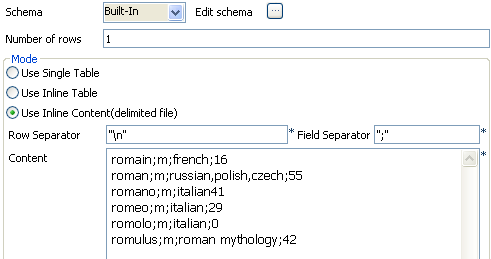

Scenario: Filtering and searching a list of names
The following use case filters a list of first names based on the name gender. Then using a regular expression, the first names starting with `rom' are listed.

- Click and drop a tFileInputDelimited, a tFilterRow and a tLogRow component.
- On the tFileInputDelimited, set the file path and separators.
- The row separator is a carriage return and the field separator is a tabulation.
- The properties and schema are Built-in for this job. This means, the retrieval information is not stored in the Repository.
- The schema is made of the following four columns in this example: firstname, gender, language, frequency.
- Then select the Encoding type in the list according to your file.
- In the Conditions table, fill in the filtering parameters based on the gender column.
- In Function, select value of, as Input column, select gender and as operator, select Equals (Str) as the expected values are of string type.
- In the Value column, type in m between double quotes to filter only the male names.
- Then to implement the search on first names starting with the rom syllable, check the Use advanced mode box and type in the following regular expression (in Perl) that includes the name of the column to be searched:
$input_row[firstname] =~ /^rom/ - To combine both conditions (simple and advanced), select And as logical operator for this use case.
- The tLogRow component doesn't require any particular setting for this example.
- Save and execute the job.



Only the male names starting with the rom syllable are listed on the console.